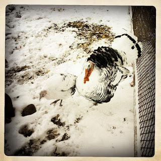

Recovered weblog entry
Not much longer...

In farmyards across the land, the clocks tick by the final days until the holidays...
Lens: Libatique 73
Film: Ina's 1969

Recovered weblog entry

In farmyards across the land, the clocks tick by the final days until the holidays...
Lens: Libatique 73
Film: Ina's 1969